MIGAS DE PAN
 Prácticas
Prácticas
 Videos
Videos Migas de pan
Migas de pan
Desparece el
menú derecha
Si me desaparece un menú y no se reinstalarlo, siempre se puede volver al menú predeterminado

INICIO
Completar una
coordenadas con selección gráfica
Si quiero rellenar una coordenadas con las herrmientas de selección no se me debe de olvidar clickar donde deseo poner las coordenades y luego seleccionarla con la herramienta grafica
INICIO
Tener en cuenta
al crear una herramienta
Al Crear una herramienta debo de seleccionar "existente" sino me crea una herramienta según criterio de robotstudio teniendo en cuenta los datos aportados (tcp, orientacion...)
INICIO
Calibración
Si el motor no esta calibrado no se puede mover el motor linealmente ni con reorientación.
El motor solo se puede mover los ejes
-
Las causas de que el motor no este calibrado.
INICIO
Grabación de
vídeo
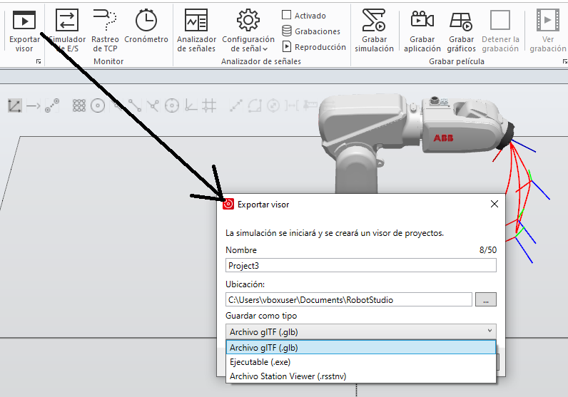
Se puede grabar una animación del funcionamiento en distintos formatos, exe, glb o rsstnv. Nos permite cambiar el punto vista, hacer Zoom etc sin tener Robotstudio.
Se pueden grabar vídeos en formato mp4
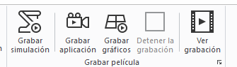
Puedo grabar una simulación, al dar play a la simulación.
Al pulsar grabar aplicación, se pone a grabar hasta que pulsemos parar
Al pulsar grabar graficos, graba los graficos hasta pulsar paro
INICIO
Extensiones
geometría
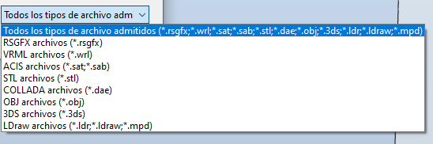
Se puede crear un objeto con un programa externo en los siguientes formartos y se pueden incluir en la biblioteca de robotstudio
INICIO
Guardar programa Rapid

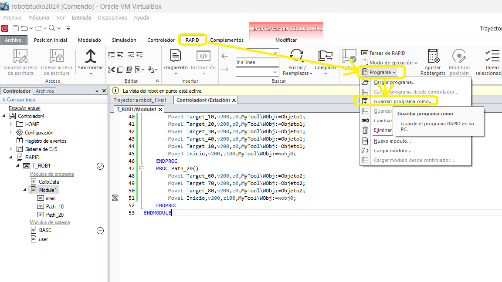
Al guadar un programa en rapid, se guarda en una carpeta con 3 archivos, los archivos con extensión mod se puede leer con el block de notas.
En calibdata esta almacenado los datos del TCP y de los workobject, en module1 incluye el programa rapid, (puntos, procesos...)

INICIO


Flexpendant, que
hacer despues de un paro protegido
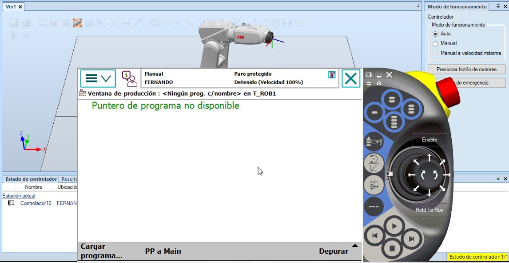Volver a poner motor ON despues de aparecer un para protegido
Ajuste fine.
* Soltar hombre muerto (Enable pasa de verde a blanco
* Activar la parada de emergencia
* Desactivar parada de emergencia
* Pulsar motor on
* Volver a pulsar Enable ( pasar de blanco a verde)
Pulsador luminoso el motor on.
* Parpadeo lento los motores apagados
* Fija al pulsarlo con hombre muerto habilitado
* Parpadeo rápido motores encendidos
INICIO
Ir a... Alinear
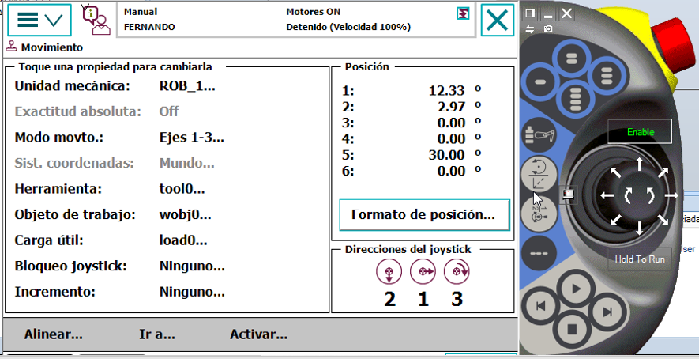Pulsado sobre ir A, nos aparece una pantalla con los puntos del robtarget, se selecciona uno, manteniendo pulsado el robot se dirige a ese punto.
Manteniendo pulsado alinear, el eje Z del TCP, se aliena con el EJE MAS CERCANO del sistema de coordenas seleccionado
INICIO
Velocidad en modo automático
La velocidad máxima del brazo robotico IRB120 es de 2000 mm/s
La velocidad máxima en modo manual es de 200mm/s
Otra forma de fucionar es en modo manual sin limitación de velocidad, por lo que la velocidad máxima sea la alcanzada en modo automático.
La velocidad en modo automática puede llegar a ser muy elevada, lo que provoca grandes inercias, que pueden romper el soporte del robot, antes de poner en marcha el robot a las velocidades programas, se pueden selecionar porcentajes de velocidad programada para observar el comportamiento del robot y de la estructura. y subir este porcentaje medida que comprbamos la instalación hasta el 100%
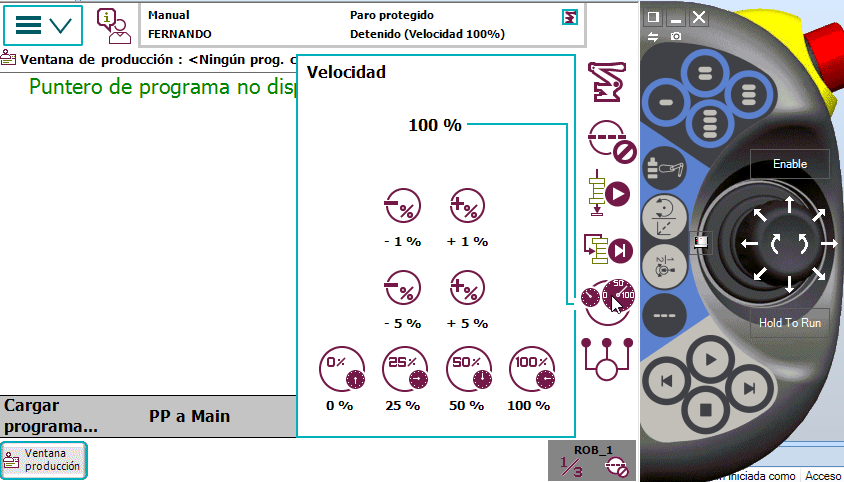
INICIO

Incrementos, Velocidad lenta del Robot
Cuando el robot se mueve de forma manual y pulsamos en la flexpendant la tecla de incrementos, el robot se mueve lentamente, para mejorar la precisión y esa velocidad lenta depende del incremento seleccionado.
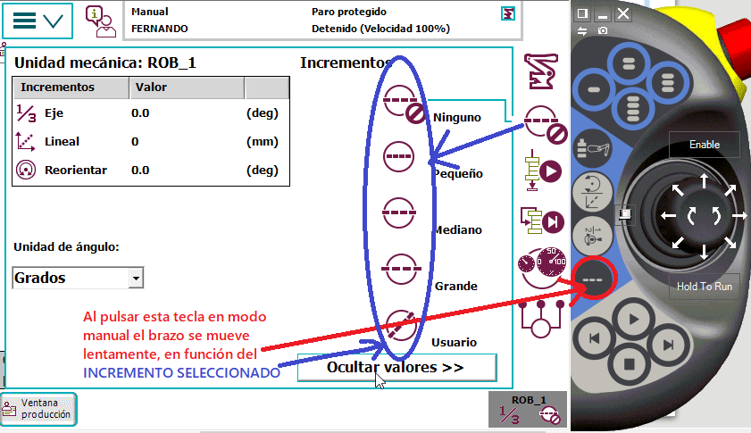
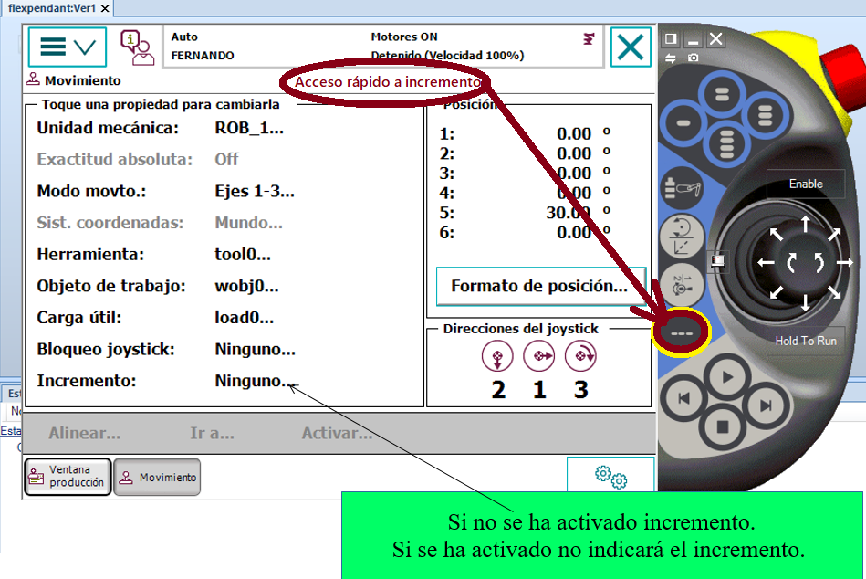
INICIO

Detalle de
visualización sistemas de coordenadas flexpendant
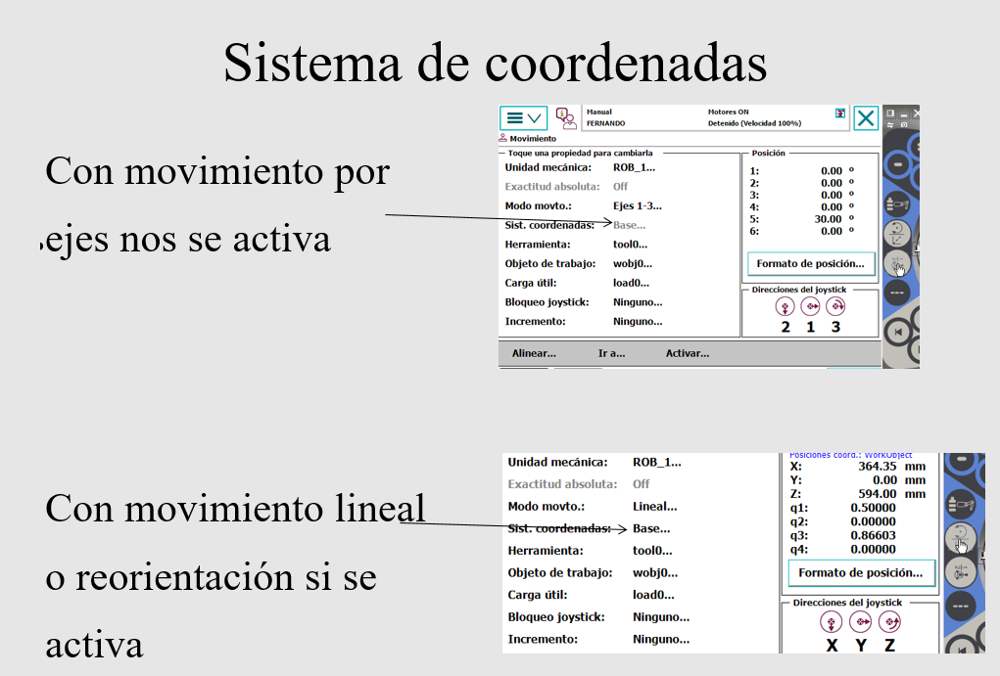
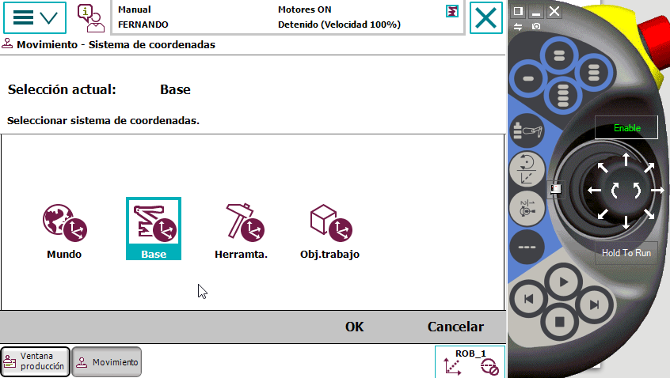
Nota : mover el brazo con referencia a la base y a la herramienta y comprobar La diferencia.
Mejor se vera será en el movimiento Z
INICIO